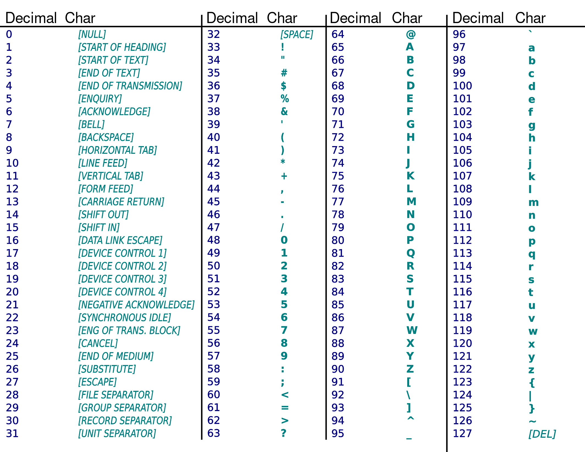

In the beginning was the Tao. The Tao gave birth to Space and Time. Therefore Space and Time are the Yin and Yang of programming. — Tao of Programming
Basic anatomy of a computer
Modern computers consists of hardware and software.
- Hardware — physical machinery
- Software — data and computer programs that make a machine do the work

Typical hardware components are:
-
Central processing unit (CPU)
- Commonly referred to as the brain of a computer
- Executes basic binary operations but extremely fast (> instructions per second)
-
Random access memory (RAM)
- Stores temporary working data (like your currently-open programs).
- Operate at very high speeds (higher than hard drives).
-
Storage devices (hard drives)
- Retains information at all times (until they get old and fail)
- Cheaper but much slower than RAM.
-
Input devices — any devices that bring data into a computer
- Mouse, keyboard, Microphone, Network devices
-
Output devices — any devices that send data out of a computer
- Monitor, Speaker, Printer, Network devices

What is programming?
Programming is the process of creating a set of instructions — a program — to tell a computer how to perform a task.
Programs take input data, perform some computation — numerical or symbolic (text) — and produce output data.
Input data come from input devices and/or from files on storage devices.
Similary, output data go into output devices and/or files on storage devices.
Question
Think about different programs/apps you use and which input, output devices they use.
What kinds of input/output data those programs may deal with?
Computers can understand only binary numbers
- How can we encode data (that humans deal with e.g. numbers, text, images etc.) into binary numbers?
Computers can perform only basic binary operations (such as add or multiply two numbers)
- How do we communicate complex instructions to computers? — Use a programming language!
Levels of programming languages
| Low-level languages | High-level languages |
|---|---|
| Closer to machine, difficult for humans | Closer to humans, easier for humans to work with |
| Less portable, provide less abstraction over hardware | More portable, more abstraction over hardware |
| Examples: Assembly Language | Examples: Java, Python |
How do computers understand high-level languages?
High-level languages cannot be directly understood by computers.
They need to be translated into Machine code.
Programming languages come in two main flavors — compiled languages or interpreted languages:
-
Compiler
- Translates a program written in a high-level language into machine code.
High-level program (source code) ➞ Compiler ➞ binary executable - Once it is compiled, you can then execute the program over and over without anymore translation.
- C/C++, Java are compiled languages.
- Translates a program written in a high-level language into machine code.
-
Interpreter
- It translates the source code during the execution. High-level program (source code) ➞ Executed directly by interpreter
- The output is simply the output of the program. There is no compiled code.
- If you want to run the code again you need to run the interpreter again.
- Python is an interpreted language.
Binary Numbers
In decimal system, a number is expressed as a sequence of digits to . For example, Two thousand twenty one ⇔ 2021
In binary number system the set of digits, is called binary digits or bits: .
A binary number is expressed as a sequence of bits.
For example, in binary is .
Is a decimal (one thousand and one) or binary (nine)?
To be explicit about the number system, we write a number with base in subscript:
- (binary)
- (decimal)
- (not a binary number)
Converting from decimal to binary
| Quotient | Remainder | |
|---|---|---|
| 123 / 2 | 61 | 1 |
| 61 / 2 | 30 | 1 |
| 30 / 2 | 15 | 0 |
| 15 / 2 | 7 | 1 |
| 7 / 2 | 3 | 1 |
| 3 / 2 | 1 | 1 |
| 1 / 2 | 0 | 1 |
123 in binary is 1111011
Converting from binary to decimal
| = | 1 × 23 | + | 0 × 22 | + | 1 × 21 | + | 1 × 20 |
| = | 1 × 8 | + | 0 × 4 | + | 1 × 2 | + | 1 × 1 |
| = | 8 | + | 0 | + | 2 | + | 1 |
| = | 11 |
Groups of bits
A group of bits is called a byte e.g.
- kilobyte (kB) = bytes
- megabyte (MB) = (million) bytes
- gigabyte (GB) = (billion) bytes
- terabyte (TB) = bytes (1000 billion)
Data in binary
We need a way to transform data in real world to/from binary.
Integers in binary
We already saw how to represent positive integers in binary e.g.
(For more info: https://en.wikipedia.org/wiki/Signed_number_representations)
Real numbers in binary
64-bit Floating point format is used to represent numbers with decimal point, e.g.
Floating point format has a finite precision.
Digits of run forever:
But with only 64-bits we can only have precision up to a fixed digits after decimal point:
(For more info: https://en.wikipedia.org/wiki/Double-precision_floating-point_format)
Text in binary
Letters and punctuations in human languages are encoded in binary using a Character Encoding such as ASCII or UTF-8 (Unicode).
| h | e | l | l | o |
|---|---|---|---|---|
Images, audio & video in binary
Even for these complex data, the idea remains the same.
We use a format to store bytes in a file and programs know what to do (play music, show image, etc) based on the format.
We already know some of these formats:
- Images: jpeg, png
- Audio: mp3, m4a, wma
- Video: mp4, avi, wmv
Exercises
- What is in decimal?
- Convert the following numbers to binary: 2, 4, 8, 16, 32, 64. Do you see a common pattern? Similarly, convert numbers 1, 3, 7, 15, 31, 63 and observe the pattern of bits.